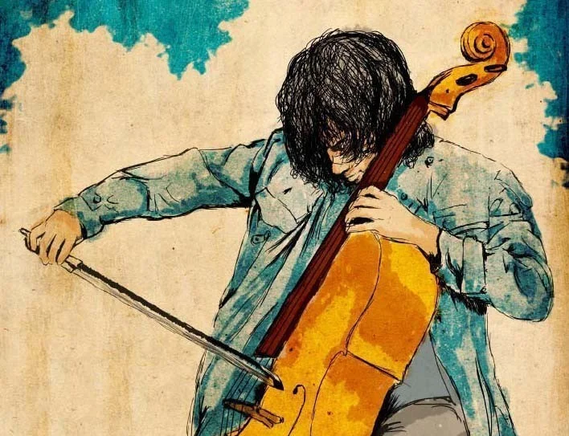

Cellista
Especialista en música venezolana. Ha desarrollado un estilo muy personal marcado por la música popular y el joropo, que ha llevado por toda Latinoamérica y ahora por Europa.
Jesús Vásquez
«El joropo hecho cello. Historias que viajan a través de la música.»

est. 2010 · Barquisimeto, VEEspecialista en música venezolana. Ha desarrollado un estilo muy personal marcado por la música popular y el joropo, que ha llevado por toda Latinoamérica y ahora por Europa.
Graduado en la UCLA de Barquisimeto. Fundó la Orquesta Experimental de Rock, donde cruza la formación académica con la energía de lo alternativo.
Fundó el Centro Cultural Canuto: clases de música y danza, eventos de poesía, intercambio de idiomas y un punto de encuentro para la comunidad.
Violonchelos solistas que recorren joropos, tangos, zambas, sambas, huaynos y boleros. Rumbo a su 1ª gira europea.
Ver el show →Viaja conectando historias a través de la música: cada lugar, una conversación; cada concierto, un puente.
Seguir el puente →ONG y movimiento cultural fundado en 2010. Funde música clásica, lo alternativo y el folclore con el cello al frente.
Entrar al movimiento →Una casa viva en Venezuela: música, danza, poesía e intercambio de idiomas para la comunidad.
Conocer el CCC →Encuentro musical de músicas latinoamericanas: un círculo abierto donde la raíz del continente se improvisa y se comparte.
Entrar a la jam →Jesús «Percucello» Vásquez es músico, director orquestal y chelista venezolano. Tomó el violonchelo —un instrumento de tradición europea— y lo volvió voz del joropo y de la música popular de su tierra, creando un lenguaje propio que reconoce el público dentro y fuera de Venezuela.
Formado en la UCLA de Barquisimeto, fundó la Orquesta Experimental de Rock y, en 2010, el movimiento La Vida Suena. Desde el Centro Cultural Canuto sostiene un espacio donde la música, la danza y la palabra se encuentran con la comunidad.
¿Quieres destacar otro video? Cámbialo en cualquier momento.
Recitales, dirección orquestal y coral, talleres y residencias artísticas. Disponible para giras, festivales e instituciones en Latinoamérica y Europa.
Conciertos, colaboraciones, prensa o simplemente para saludar. Escríbeme y te respondo personalmente.